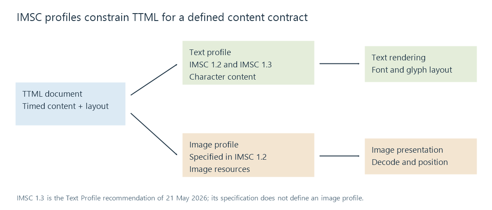

IMSC timed text
IMSC defines constrained TTML profiles for interoperable internet-media subtitles and captions, with version-specific text and image capabilities.
IMSC constrains the broad TTML language into profiles intended for internet-media subtitle and caption delivery. The profile establishes an agreed set of timing, styling and presentation rules that an author and a consumer can implement together.
It is not simply another name for every TTML file. A document can be valid XML and use TTML elements while still using features outside the selected IMSC profile.
The version belongs in the description
| Reference | Profiles specified |
|---|---|
| IMSC 1.2, W3C Recommendation from 2020 | Text-only and image-only profiles |
| IMSC Text Profile 1.3, W3C Recommendation of 21 May 2026 | Text profile; the earlier image profile is not specified in this version |
The IMSC 1.3 recommendation points applications needing the image-only profile to IMSC 1.2. “IMSC supports images” and “IMSC is text-only” can therefore each be incomplete statements when the version and profile are omitted.
A text profile preserves characters that a renderer draws. The older image profile supplies image resources for presentation. Packaging both in an XML-based system does not make an image's pictured letters editable character text.

The profile is a contract about features
The profile constrains such things as applicable time bases, layout, styling and permitted extensions. Profile signaling identifies the intended content contract. A consumer still needs to implement that contract, obtain supporting resources and map the presentation to its video display.
This is more specific than checking the filename extension. It is also more specific than an XML parser confirming that tags are balanced.
For example, a caption can request a named font, a region and a styled span. Conformance defines the applicable rules, but the available font face and its metrics still affect the drawn text. A pipeline must either provide suitable resources and support the presentation or make a deliberate conversion to another model.
Rendering capacity is another part of delivery
IMSC's hypothetical render model provides a defined way to assess a document's rendering complexity. It is a model for constrained content processing, not a promise that every actual player draws any conforming document at the same speed.
A small file can still contain many active elements or expensive presentation changes. Network file size and the work needed at a cue boundary are different quantities.
For an Emby stream arriving from a system that uses IMSC, identify the actual version/profile and the delivered subtitle representation. A conversion to WebVTT or another client format needs to resolve the source's timing and decide which layout/styling information can survive.